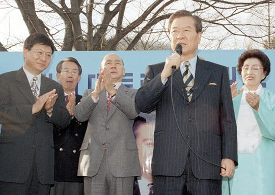
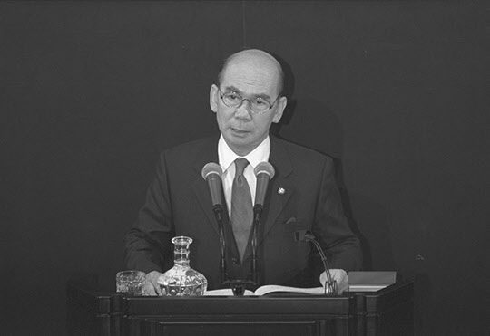

보도일 2015-06-15출처 조선일보 프리미엄조선 연재
1997년 11월 하순, 대선 형편이나 경제 형편이나 긴박하게 돌아가는 그즈음의 어느 아침, 박태준은 김대중 대선 캠프의 젊은 국회의원 김민석에게 전화를 걸었다. 간단하고도 분명한 용건이었다. 12월 5일에 김대중 후보와 함께 구미시 박정희 대통령 생가를 방문하는 일정을 잡아서 재가를 받으라는 것.
박태준은 김대중에게 미리 말해둔 대로 이제는 박정희와 김대중이 화해할 자리를 마련하고 싶었다. 표를 얻어오는 데야 얼마나 도움이 되랴마는 김대중의 대선에 ‘철저한 박정희의 사람’이라고 알려진 박태준이 두 팔을 걷고 나섰으니 더 미룰 수 없는 중대사라고, 그는 생각했다. 과거의 정적(政敵)이었던 박정희와 김대중, 그러나 한 사람이 갑자기 세상을 떠남으로써 미처 인간적으로 만나볼 기회도 얻지 못했던 두 사람.
이제는 살아있는 사람이 먼저 화해의 길을 가야 하는 것이라고, 그는 판단했다. ‘산업화세력과 민주화세력의 화해, 영남과 호남의 화합.’ 지금 박태준이 외로이 외치고 있는, 아직은 메아리가 미미한 그 화해와 화합의 길을 닦는 일에 김대중이 앞장서야 하고 박태준은 열심히 도와야 한다고, 그는 확신했다.

12월 5일, 삼십여 년 전 박정희가 ‘우리는 민족중흥의 역사적 사명을 띠고 이 땅에 태어났다’로 시작하는「국민교육헌장」을 선포한 그날, 김대중은 박태준의 안내를 받아 경북 구미시 상모동 박정희 생가를 찾아갔다. 김대중의 대통령 재임 중에 우리 정부가 편성하고 승인하는 ‘박정희 기념관’ 건립예산의 단초가 되기도 한 그 자리에는 박정희의 외아들도 함께했다. 박지만의 동행, 이는 박태준이 설득한 결과였다.
산 사람이 찾아와서 죽은 사람과 오래 전에 맺었던 나쁜 매듭을 푼다고 알려진 자리에는 지역민 500여 명이 모여들었다. 김대중이 무슨 말을 하려나. 그들은 궁금증을 품고 있었다.
화해의 마당에 들어선 대선 후보는 화해의 말들을 간추리고 있었다. 그가 박태준에게 먼저 밝혔고, 듣는 이가 고개를 끄덕인 내용이었다. 김대중이 지역민들 앞에서 말했다. 그러나 그것은 박정희의 혼백을 향해, 산업화와 민주화가 마치 동일한 역사의 무대에 공존할 수 없는 것처럼 어처구니없이 상충했던 유신체제의 시대를 향해, 더 나아가 대한민국의 현대사를 향해 던지는 메시지여야 했다.

“고인이 경제에 7할을 바치고 인권에 3할을 쓴 분이었다면, 고인과 정치적으로 대립하던 시절의 나는 인권에 7할을 바치고 경제에 3할을 쓴 사람이었습니다. 고인과 나의 차이는 바로 거기에 기인한 것이었습니다.”
김대중은 에둘러 말했지만, 속이 시원하도록 직방으로 말하진 않았지만, 박정희 통치 18년에 대해 ‘공칠과삼(功七過三)’으로 평가하고 정리하는 것에 가까웠다. 다만 아쉬운 점은, 그날의 화해 행사가 대통령선거운동 기간에 이뤄진 탓으로 보수 성향의 주요 일간지들이 거의 다루지 않아 결과적으로 국민의 가슴에 널리 전파되지 못한 것이었다.(그 뉴스를 재생하는 것은 2015년 봄날 현재도 희귀한 꽃소식보다 더 반갑고 더 귀중한 뉴스가 되지 않을까?)
12월 16일 대통령선거는 김대중 후보의 신승으로 끝났다. 약 39만 표 승리. 아이엠에프(IMF)사태 한복판, 정축국치의 한겨울, 일흔 살을 갓 넘은 박태준 앞에는 부도 직전의 엉망진창으로 널브러진 국가경제를 수습해야 하는 막중한 과업이 기다리고 있었다. 아, 어떻게 일으켜 세운 경제였는가. 그는 박정희를 바라볼 면목이 없었다. 지금부터 혼신의 정성을 바쳐 빠른 시일 안에 국민 생활을 정상화함으로써 박정희를 바라볼 만한 면목도 갖춰야 했다.
<②편에계속>